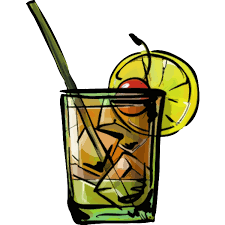

Whisky-sour Recipe

Description
Whisky-sour is a mixed drink containing whiskey (often burbon),
lemon juice, sugar, and optionally, a dash of egg white or cocktails foamer.
With the egg white, it is sometimes called a Boston Sour.
With a few bar spoons of full-bodied red wine floated on top,
it is often referred to as a New York Sour.
It is shaken and served either straight up or over ice.
Ingredients
- 60 ml Rittenhouse Rye 100 Proof
- 30 ml Lemon Juice
- 15 ml 2:1 Rich Simple Syrup
- 15 ml Orange Juice
- 15 ml Egg White
Steps
- Combine all ingredients to your cocktail shaker
- Dry shake (no ice)
- Wet shake (with ice)
- Strain over fresh ice into a double old fashioned glass
- Garnish with a slice of orange and skewered maraschino cherry